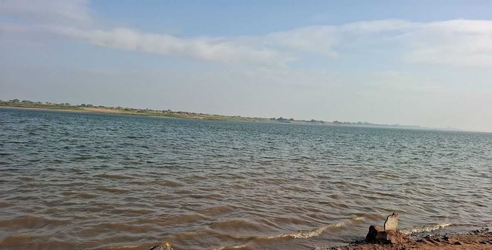

<title>Triveni Sangamam photos and videos | Rekshetra Tours</title>
<meta name="robots" content="noindex, follow">
<!-- ===== TRIVENI SANGAMAM — ఫోటో, వీడియో & Get Directions =====
  triveni-sangamam.html lo footer mundu ee mottam block paste cheyandi.
  Ee 3 files same folder lo undali:
    triveni-sangamam-godavari-1200.jpg, triveni-sangamam.mp4, triveni-sangamam-poster.jpg
  Directions point: VIP Ghat / Saraswati Ghat — 18.8230744, 79.9050598 (Google place 'VIP Ghat Kaleshwaram')
  Marchali ante kinda DIR_LAT / DIR_LNG / PLACE_ID marchandi
-->
<section class="tvm" id="tv-media">
<style>
  .tvm{max-width:900px;margin:28px auto;padding:0 16px;font-family:'Noto Sans Telugu',system-ui,sans-serif;color:#2b1a12}
  .tvm *{box-sizing:border-box}
  .tvm-head{text-align:center;margin-bottom:14px}
  .tvm-rule{color:#d9791a;font-size:1.2rem}
  .tvm-head h2{margin:2px 0 4px;color:#7a1f2b;font-size:1.6rem;line-height:1.35}
  .tvm-head p{margin:0;color:#7a6a5f;font-size:.95rem}
  .tvm-grid{display:grid;gap:16px}
  .tvm-card{margin:0;background:#fff;border:1px solid #ead9bd;border-top:5px solid #d9791a;border-radius:14px;overflow:hidden;box-shadow:0 3px 10px rgba(0,0,0,.1)}
  .tvm-card img,.tvm-card video{display:block;width:100%;height:auto;background:#000}
  .tvm-card figcaption{padding:10px 14px;font-size:1.05rem;color:#722a2a}
  .tvm-card figcaption small{display:block;color:#7a6a5f;font-size:.85rem}
  .tvm-dir{margin-top:16px;background:#fbf3e6;border:1px solid #ead9bd;border-radius:14px;padding:14px 16px;text-align:center}
  .tvm-dir b{display:block;color:#7a1f2b;font-size:1.15rem;margin-bottom:10px}
  .tvm-btns{display:flex;gap:10px;flex-wrap:wrap;justify-content:center}
  .tvm-btn{flex:1;min-width:170px;max-width:300px;text-decoration:none;padding:11px 14px;border-radius:10px;color:#fff;background:#c0392b;font-size:1rem}
  .tvm-btn.alt{background:#3f7a52}
  .tvm-dir small{display:block;margin-top:8px;color:#7a6a5f;font-size:.8rem}
</style>

<div class="tvm-head">
  <div class="tvm-rule">✦</div>
  <h2>త్రివేణి సంగమం — ఫోటో &amp; వీడియో</h2>
  <p>Triveni Sangamam — Godavari ghat photo &amp; video</p>
</div>

<div class="tvm-grid">
  <figure class="tvm-card">
    
    <figcaption>త్రివేణి సంగమం — VIP ఘాట్ / సరస్వతి ఘాట్ వద్ద గోదావరి నది<small>Godavari river at Triveni Sangamam (VIP Ghat / Saraswati Ghat), Kaleshwaram</small></figcaption>
  </figure>

  <figure class="tvm-card">
    <video controls preload="metadata" playsinline poster="triveni-sangamam-poster.jpg">
      <source src="triveni-sangamam.mp4" type="video/mp4">
      మీ బ్రౌజర్ వీడియోను సపోర్ట్ చేయదు.
    </video>
    <figcaption>ఘాట్ వద్ద గోదావరి దృశ్యాలు (వీడియో)<small>Ghat view at Triveni Sangamam — video</small></figcaption>
  </figure>
</div>

<div class="tvm-dir">
  <b>📍 త్రివేణి సంగమానికి దారి<span style="display:block;font-size:.9rem;color:#9a5b12;font-weight:600">VIP ఘాట్ / సరస్వతి ఘాట్ వద్ద</span></b>
  <div class="tvm-btns">
    <a class="tvm-btn" id="tvm-dir" target="_blank" rel="noopener" href="#">➤ Get Directions</a>
    <a class="tvm-btn alt" id="tvm-map" target="_blank" rel="noopener" href="#">🗺 Map లో చూడండి</a>
  </div>
  <small id="tvm-gps"></small>
</div>

<script>
(function(){
  var DIR_LAT = "18.8230744", DIR_LNG = "79.9050598", PLACE_ID = "ChIJayDqfsTtMjoRJYE4-BQCFJg";
  var DIR = "https://www.google.com/maps/dir/?api=1&destination="+DIR_LAT+","+DIR_LNG+"&destination_place_id="+PLACE_ID+"&travelmode=driving";
  var MAP = "https://www.google.com/maps/search/?api=1&query="+DIR_LAT+","+DIR_LNG+"&query_place_id="+PLACE_ID;
  document.getElementById("tvm-dir").href = DIR;
  document.getElementById("tvm-map").href = MAP;
  document.getElementById("tvm-gps").textContent = "GPS: "+DIR_LAT+", "+DIR_LNG;
  // ee page lo unna pata "Triveni" Get Directions links kuda sari chestundi
  document.addEventListener("DOMContentLoaded", function(){
    document.querySelectorAll('a[href*="google.com/maps"]').forEach(function(a){
      var h = a.getAttribute("href"); try{ h = decodeURIComponent(h); }catch(e){}
      if (/triveni/i.test(h)) a.href = DIR;
    });
  });
})();
</script>
</section>
